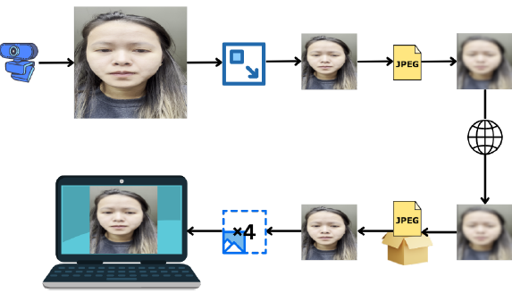
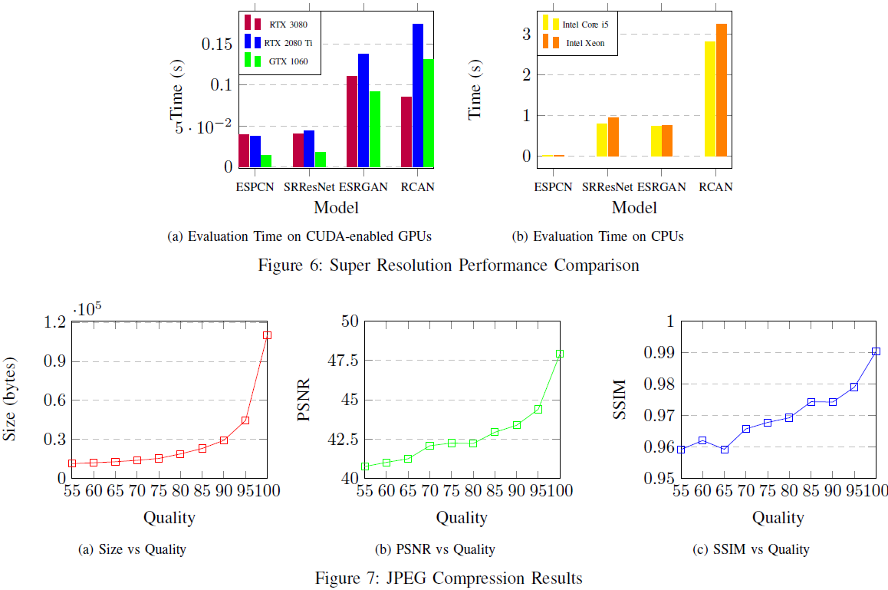

Project Overview:
The project was about building a chat application that could enhance the quality of images by utilizing AI and ML based techniques to improve the resolution. Furthermore, the models used could identify the internet speed and modify the resolution as necessary, allowing low-level hardware devices to provide a superior chat experience.
Project Report:
Image and Video Enhancement
Working of the Project:
The video chat application uses a peer-to-peer (P2P) TCP connection for streaming content between two clients. A server is used to help with establishing the connection between the clients. The displayed image on the client side is then enhanced using the chosen super-resolution model. Because video chat applications can be used on such a broad array of devices we considered a variety of models that offer a range of trade-offs between speed and quality.

Our objective was not only to accurately reconstruct the original image, but to produce an image that is visually appealing to the end user. So, we made subjective judgments on the visual appeal of the outputs from each model, regardless of how accurate they are. For the subjective assessment, we used live camera footage in order to judge the quality of the output under more realistic circumstances. The two factors considered were Perceieved clarity of the image and temporal stability.
We tested various models for the application using two main metrics. The metrics used to evaluate the models were PSNR and SSIM. The Super Resolution Performance Comparison and JPEG compression results based on Quality and the models are shown below.

The implementation of this application offers several benefits to both users and service/content providers. One such advantage is that users are more likely to continue using or switch to this application if they have an improved quality of experience (QoE) while video chatting or streaming. This, in turn, can boost the user's productivity and generate higher revenue for the companies. By using this implementation, even though a GPU is used they can get improved video qualities in low network areas. Running the implementation system on the server side offers several advantages for determining the bit rate of a user. Many applications today use HTTP-based streaming and chat based on ABR, which means that implementing this system would require minimal changes to the applications.
Super-Resolution Models Used:
- Bicubic interpolation
- ESPCN: Efficient Sub-Pixel Convolutional Network
- SRResNet: Super-Resolution Residual Network
- ESRGAN: Enhanced Super-Resolution Generative Adversarial Network
- RCAN: Residual Channel Attention Network
- NinaSR: Neural Image Super-Resolution